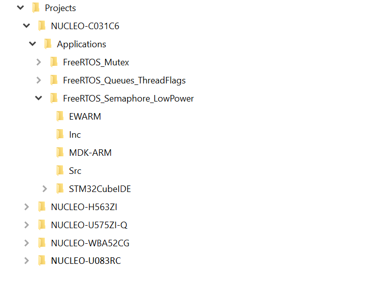

Release Notes for X-CUBE-FREERTOS
Copyright © 2023 STMicroelectronics
Purpose
With FreeRTOS complementing the extensive STM32Cube ecosystem providing free development tools, software bricks, and software expansion packages, STM32 users can also leverage the rich services of FreeRTOS which meet the needs of tiny, smart, connected devices.
X-CUBE-FREERTOS (FreeRTOS Software Expansion for STM32Cube) provides a full integration of FreeRTOS in the STM32Cube environment for the STM32U5 and STM32H5 series of microcontrollers. Ready-to-run applicative examples are also provided for the NUCLEO-H563ZI and NUCLEO-U575ZI-Q, thus reducing the learning curve and ensuring a smooth application development experience with FreeRTOS and STM32U5 or STM32H5 MCUs.

Repository structure
The STMicroelectronics X-CUBE-FREERTOS repository consists of the following repositories:
- STM32CubeMX: contains STM32CubeMX configuration
files:
- XML files: they describe how the software component configuration parameters can be modified through the STM32CubeMX user interface
- FTL files: they provide the initialization code to be generated by the STM32CubeMX
- Drivers: contains STM32U5 and STM32H5 CMSIS and HAL drivers.
- Middlewares: contains FreeRTOS Middleware files.
- Projects: provides ready-to-run applicative examples for FreeRTOS on the supported boards. Projects are structured as follows:

Documentation
More comprehensive documentation is available on on FreeRTOS FreeRTOS documentation.
Update history
Main changes
- First official release of X-CUBE-FREERTOS V1.0.0 package supporting STM32U5 and STM32H5 series
Contents
Applications
Provide ready-to-run applicative examples for FreeRTOS on the supported boards. For detailed list refer to applications list
Drivers
| Name | Version | Release note |
|---|---|---|
| Cortex-M CMSIS | v5.6.0 | release notes |
| STM32U5xx CMSIS | v1.2.0 | release notes |
| STM32U5xx HAL | v1.2.0 | release notes |
| STM32H5xx CMSIS | v1.0.0 | release notes |
| STM32H5xx HAL | v1.0.0 | release notes |
Middlewares
| Name | Version | Release note |
|---|---|---|
| FreeRTOS | 10.4.6 | release notes |
Known limitations
- CMSIS RTOS2 configuration parameters in STM32CubeMX UI cannot be reset to default values.
- MDK-ARM Microlib option is overwritten after code generation for STM32H5.
- When generating project with TrustZone activated, end user needs to:
- Activate the ‘CMSIS RTOS2/CORE’ component in both secure and non-secure contexts.
- Add SysTick_Handler IRQ handler to Secure/Src/stm32u5xx_it.c/stm32h5xx_it.c files.
Development toolchains and compilers
- IAR Embedded Workbench for ARM (EWARM) toolchain 9.20.1 + ST-LINKV3.Patch available here:
- Utilities\PC_Software\IDEs_Patches\EWARM\EWARMv8_STM32H5xx_V1.0.zip
- STM32CubeIDE V1.12.0 + ST-LINKV3
- RealView Microcontroller Development Kit (MDK-ARM) toolchain V5.37 + ST-LINKV3.Patch available here:
- Utilities\PC_Software\IDEs_Patches\MDK-ARM\Keil.STM32H5xx_DFP.1.0.0.zip
Supported devices and boards by applications
- NUCLEO-U575ZI-Q (MB1549C)
- NUCLEO-H563ZI (MB1404-B02)
Dependencies
This software release is compatible with:
- STM32CubeMX V6.8.0
- STM32PackCreator 3.5.0